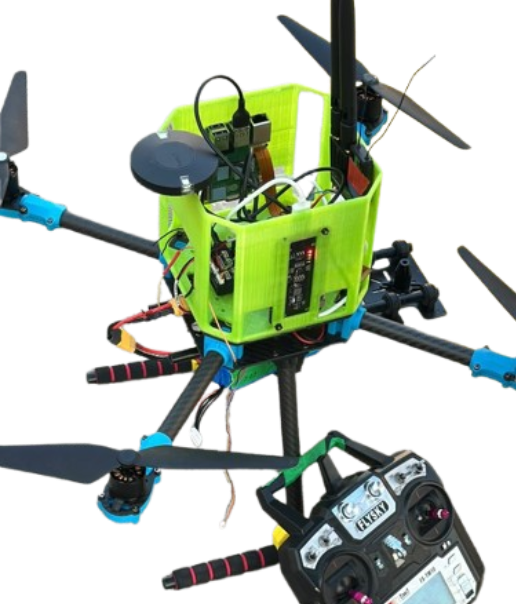
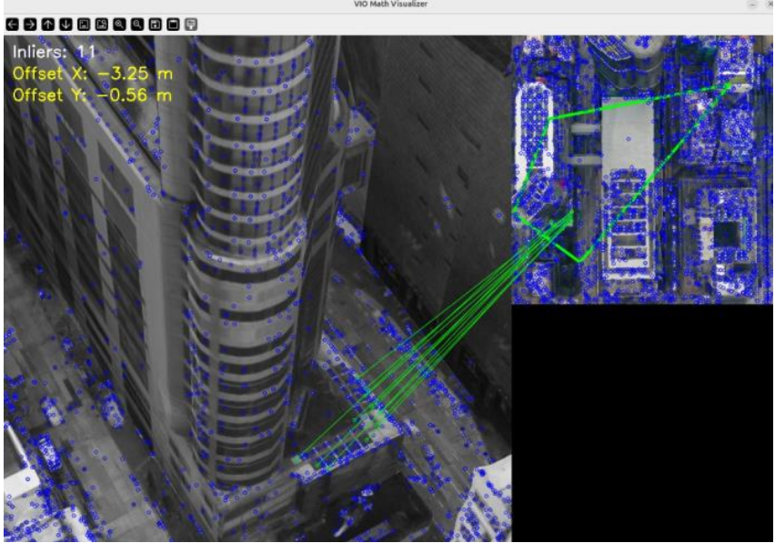
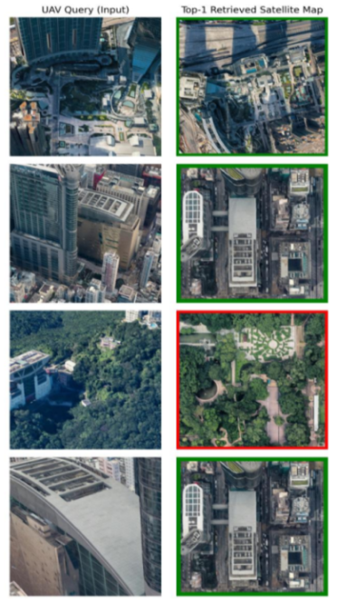

The Pi Camera 3 feeds raw video through the MIPI/CSI interface. To bypass native Ubuntu 22.04 limitations, custom libcamera drivers are invoked, granting direct, low-latency access to the Pi 5's Image Signal Processor (ISP).
The Pi 5 processes visual data inside a ROS 2 Humble environment. The cv_bridge package translates ROS image topics into OpenCV matrices, feeding the dual-stage AI geolocalization algorithms running entirely on the edge CPU.
Standard 57600 baud rates caused packet drops ("ghosting nodes"). The system utilizes an upgraded 921600 baud rate over /dev/ttyACM0 to ensure uninterrupted, high-frequency MAVLink data transfer between the Pi 5 and the flight controller.
MAVROS translates the metric AI offsets and injects them directly into the /mavros/vision_pose/pose topic. The Pixhawk 6X (PX4) processes this via its EKF2 engine, issuing precise autonomous motor commands while strictly ignoring jammed GPS.

A quantized ResNet-50 model extracts 512-dimensional embeddings from the live drone feed, comparing them against an indexed FAISS satellite database to find the closest semantic neighborhood map tile.
The SIFT algorithm extracts distinct geometric keypoints (visualized above). RANSAC aggressively filters out mismatched or distorted points to ensure only high-confidence visual anchors are used to map the drone's location onto the tile.
The system calculates Ground Sample Distance (GSD) using real-time altitude and camera FOV. Pixel offsets from Phase II are multiplied by the GSD to yield real-world metric X/Y corrections.
